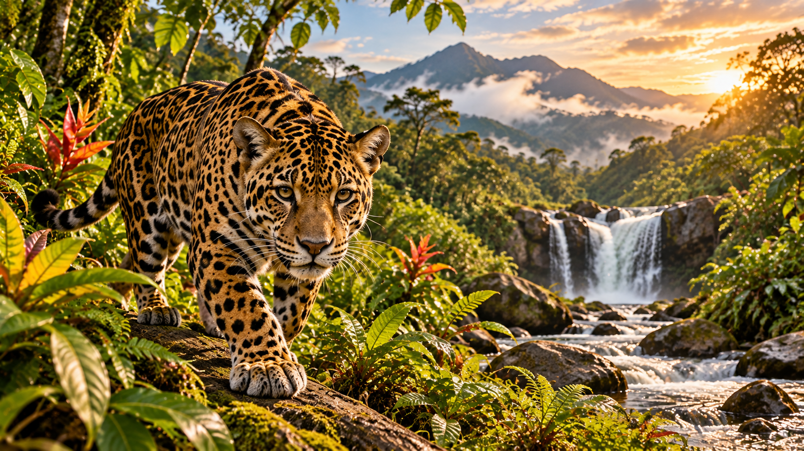

🌎 Hábitat
💚 Importancia ecológica
🔎 Para aprender más
⚠️ Amenazas y conservación
¿Cómo podemos protegerlos?
🎬 Aprende con nuestros videos
Explora los videos educativos y descubre más sobre los animales, sus hábitats y las acciones para protegerlos.
🎮 ¡Aprende jugando!
🧠 Pon a prueba lo aprendido
Responde las diez preguntas. La información que necesitas está en esta misma sección.
¡Terminaste el cuestionario!
Tu resultado:
🎲 Encuentra las parejas
Elige una carta y después otra. Si sus símbolos coinciden, la pareja quedará descubierta. Encuentra las seis parejas.
Parejas: 0 de 6
Intentos: 0
¡Encuentra las seis parejas!